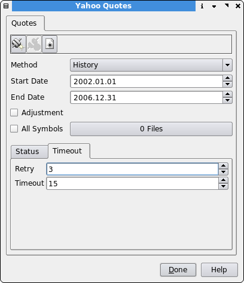
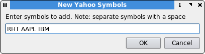
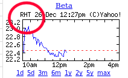

Yahoo Plugin
Description
Yahoo provides historical and 10 - 20 minute delayed quotes for free. All yahoo supported exchanges are available with this plugin.

Input Parameters
Method
The type of download quote data you want
- History - Update history using a specific date range.
- Auto History - Updates to the most recent history.
- Quote - Updates the most recent intra-day delayed quote.
- Fundamental - Updates charts with yahoo fundamental data.
Start Date
The most distant date to include for update. Used only for History method.
End Date
The most recent date to include for update. Used only for History method.
Adjustment
Propagate the Close/Adjusted Close factor to all price columns (i.e. adjust for stock splits and dividends) more info below
All Symbols
If checked, all symbols will be selected. Unchecked, specific symbols can be selected by using the file selector.
Error Retry
The number of attempts to make if an error downloading the symbol occurs.
Timeout
The number of seconds to wait while downloading a symbol before moving on to the next symbol in the list.
Add new stocks to the Qtstalker database
Pressing the "New Symbol" button  will bring up
the following dialog.
will bring up
the following dialog.

Here we will be adding RHT, AAPL and IBM to our database. Leave a space between the symbols.
NOTE: You only have to create the symbols once and not every time you want to download quotes.
To find out the correct Yahoo symbol name for the stock of your desire, search the stock at the yahoo finance portal and take a look at the upper left corner in the displayed chart. US stocks do not have a suffix at the end like .DE for stocks traded at Xetra or .L for London Stock Exchange.

Symbols can be lowercase (e.g bhp.ax) or uppercase (e.g. BHP.AX) - it doesn't matter, but be consistent.
Perform quote download
After you have made all adjustments in the GUI press the download button and the process starts. If an error occurs, it will be displayed in the status window.
If you want to abort the download for any reason, press the cancel button which is only available while a download is in progress.
Detailed explanation of downloading
See the Quickstart documentation for an overview.
Add a new symbol as described above (e.g. BHP). Download some historical end-of-day data using the "History" method. This only needs to be done once. However if you have subsequent trouble with downloading, you might need to delete a symbol and download its history again.
After the close of the market each day, use the "Auto History" method. This will automatically retrieve end-of-day data for each day to bring you up-to-date. Be aware of market closing times and data availability.
While the market is open, the "Quote" method can be used to obtain a snapshot of today's current trading (20-minute delayed). However, again be aware of data availability for your particular exchange.
Market closing times and data availability
Yahoo publishes the end-of-day data some time after each exchange closes.
North American exchanges seem to be available around 01:00 UTC which is about 5 hours after NYSE close.
All other exchanges seem to be available around 13:00 UTC. For example, for Australia and London, yesterday's data will not be available before the exchange opens. Note that this causes difficulty using the Quote method because you will be missing yesterday's data.
See a list of market opening times and closing times.
Detailed explanation about the adjustment option
Yahoo provides an Adjusted Close column in its data, scaling prior closing prices to the most recent price based on stock splits and dividends. For example, if a 2-for-1 split occurs halfway through the data, the Adjusted Close price from before the split will be half of the Close price. If the Adjustments option is checked, the plugin will calculate the factor between the Close price and the Adjusted Close price and apply it to Open, Close, High, Low, and Volume. It divides the prices and multiplies the volume, so in any case Close x Volume is the same as before the conversion. This allows you to display continuous graphs and analyze the movement of an issue without large jumps due to stock splits, although the caveat is that absolute prices are a factor different from what occurred on the exchange that day. Having said that, factoring for historical events in this manner is a common approach for visually graphing stock prices.